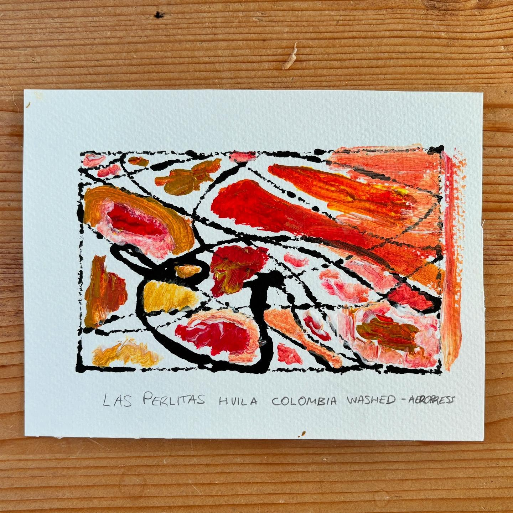
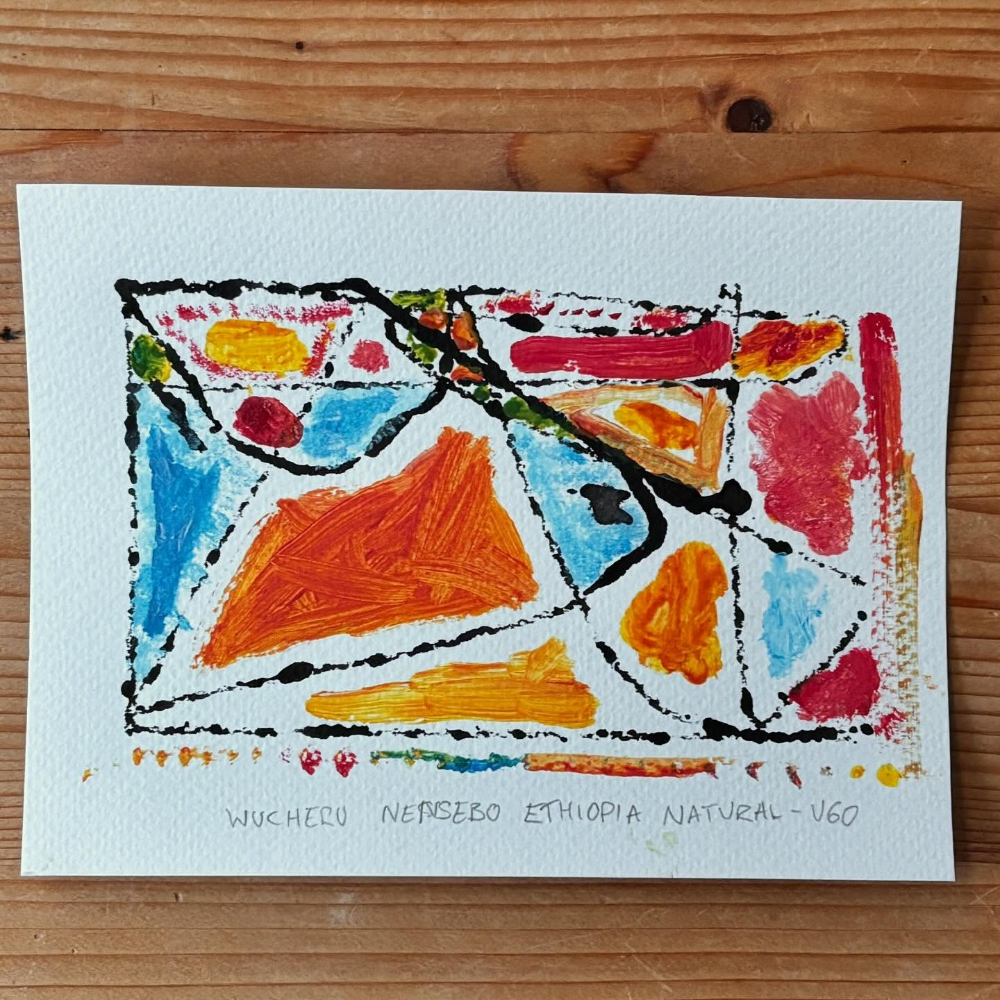
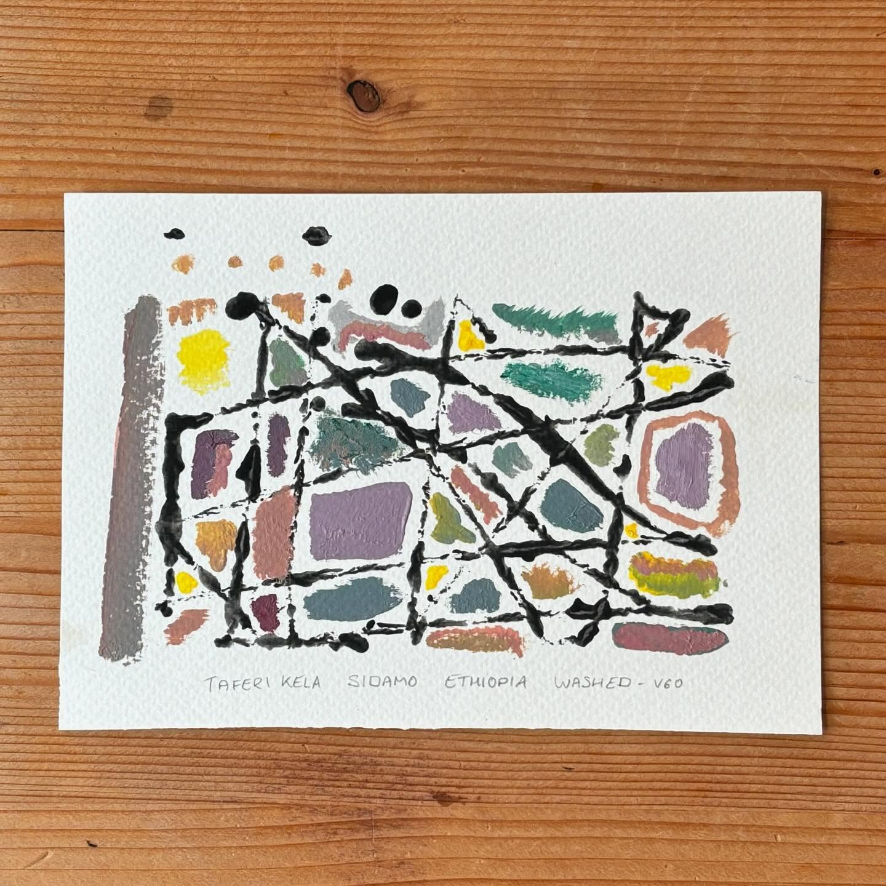
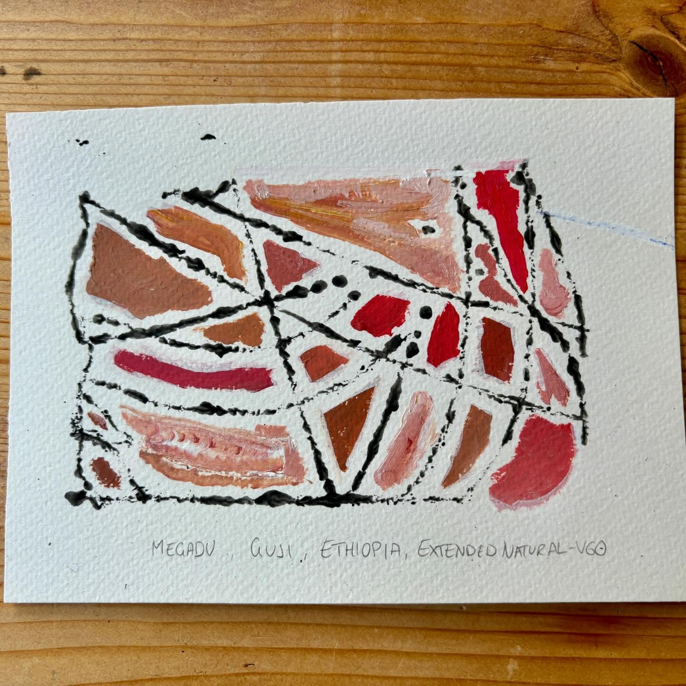
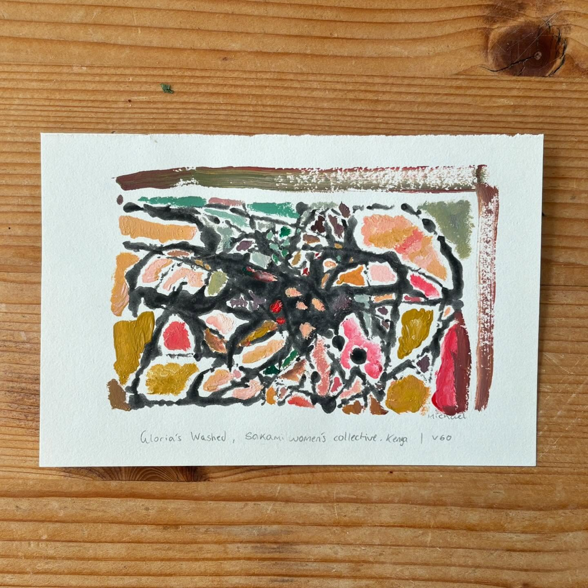
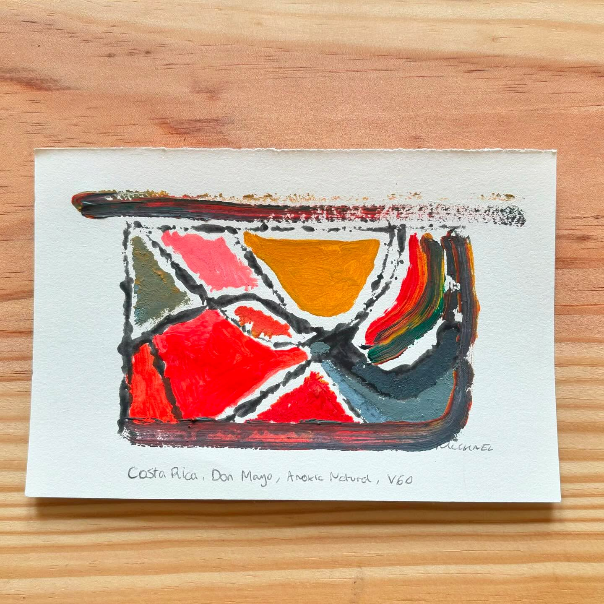

Washed · Colombia
Las Perlitas
Smallholder farms, Huila · 1,600–2,000 m · Pink Bourbon
Roasted May 2025 – July 2026. "Little Pearls" — smallholder lots too
small to export on their own, found and bundled by The Coffee Quest's
competitions in Huila. We have spent weeks in Huila and found it
enchanting beyond the coffee — the monolithic head statues carved in
volcanic rock.

Natural · Ethiopia
Nensebo
Nensebo, Wucheru (West Arsi) · 1,800–2,000 m · Heirloom
Roasted Nov 2024 – May 2025. Grown by Kasim, a very young farmer in
Nensebo; December 2023 harvest, transparently imported by Bette Buna,
who shared the farm's coordinates. We recommend this one as a pour over.

Washed · Ethiopia
Taferi Kela
Taferi Kela, Sidama · 2,100 m · 74112 & Enat Buna D'ara Otilicho
Roasted Sep 2024 – Jan 2025. From Bette Buna's Taferi Kela farm,
December 2023 harvest. A classic Ethiopian Sidama washed cup with great
balance and notes of marzipan, bergamot and rooibos.

Extended natural · Ethiopia
Megadu
Megadu, Guji · 1,800–2,200 m · 74112, 74110 & Enat Buna Megadu
Roasted July – Sep 2024. Cherries from Dawit & Hester's farm, dried
for eight weeks in shade with careful moisture management. We brew it
with a higher water-to-coffee ratio — 360 g water to 20 g coffee — and
the last of the extraction stays sweet and smooth.

Washed · Kenya
Gloria
Sakami, Trans-Nzoia County · 1,800 m · Ruiru 11, Batian, SL28, K7
Roasted Mar – July 2024. Gloria gave up her career as a beauty expert
to dedicate her life to coffee on Sakami — the estate she and her
husband Jarmo named after their daughters. Complex, with flavours that
evolve in the mouth. Best 1–4 weeks after roast date.

Anoxic natural · Costa Rica
Don Mayo
La Ladera, Tarrazú · 1,850 m · Catuai
Roasted Nov 2023 – Mar 2024. Washed cherries sealed airtight and
fermented for 36 hours, then slow-dried for eight days plus patios at
Don Mayo micromill. Best 2–4 weeks after roast date. Fun fact: anoxic
is the correct term for what many call anaerobic — fermentation is
always anaerobic, but the oxygen-free environment is anoxic. It also
fits better on the label.